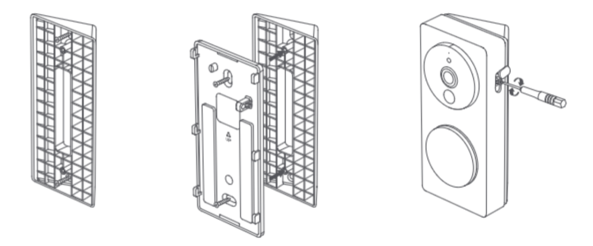
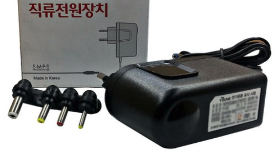

11 도어벨 G4
11.1 설치
질문 2: 예전에 도어벨 메인 모듈을 벽면에 설치했다가 떼는데 조금 힘들었었는데, 앞으로는 접착면에 자석을 붙여서 문에 장착해 보려고 합니다. 이 경우 기능상의 어떤 영향이 있을까요?
답변 2:
물리적으로 도어벨의 무게를 지지할 수 있는 정도의 자석이라면 상관없습니다. 즉, 기능상의 문제가 발생하지는 않습니다.
질문 3: 제품 구성품 중 다음 모양의 부품이 있는데 용도가 무엇인지요?

답변 3:
도어벨을 출입문 옆면에 설치해 하는 경우 20’ 브라킷을 추가로 설치하여 렌즈 방향을 조정할 수 있습니다. 도어벨 후면판을 20’ 브라킷에 나사로 연결해 주십시오. 다만, 나사 결합 부분이 많이 빡빡하게 설계되어 있어 결합에 약간 힘이 드실 수 있습니다.

질문 4: DC 전원 연결시 단자의 양극과 음극을 어떻게 구분할 수 있나요?
답변 4:
DC 전원 연결시 두 단자 모두 양극 또는 음극에 연결될 수 있습니다.
질문 5: 도어벨의 배터리를 교체할 때 배터리를 교체하기 위한 뒷판의 나사를 제거할 수 없는 이유는 무엇인가요?
답변 5:
뒷판의 나사는 도어벨의 분해 중에 나사가 떨어져서 분실되는 것을 방지하기 위해 움직이지 않도록 설계되었습니다. 나사를 강제로 빼지 마십시오.
질문 6: 어떤 포맷의 사용자 지정 벨소리를 업로드 할 수 있나요? 얼마나 많은 사용자 지정 벨소리를 업로드 할 수 있나요?
답변 6:
5Mb이하의 MP3포맷의 사용자 지정 벨소리만 업로드 도리 수 있습니다. 각각의 도어벨은 최대 5개의 사용자 지정 벨소리를 지원합니다.
질문 7: 도어벨 관련 자동화는 클라우드에서 실행되나요?
답변 7:
도어벨에 허브 기능이 없더라도, 도어벨을 누른 후 차임리피터에서 사용자 정의 벨소리를 재생하는 기능과 같은 일부 도어벨 기능의 로컬화가 여전히 가능합니다.
11.2 사용팁
질문 1: 도어벨 G4를 애플 홈킷과 연동할 경우, 계정이 다른 여러대의 애플 디바이스가 연동되는데 문제가 없을까요? 예를 들면,
애플 계정이 다른 아이폰 2대
A 계정에 연결된 아이맥/아이패드/워치/애플티브
B 계정에 연결된 아이패드
A 계정에 연결된 홈팟미니 5대
답변 1:
네, 문제는 없습니다. 다만, 애플 홈킷이 구성원별 통제권한을 다르게 부여하는 점 참고 하십시오. 즉, 액세서리 추가 제거 및 설정 변경 할 수 있는 권한을 통제할 수 있으나, 특정 구성원은 특정 공간만 컨트롤 할 수 있게 제한하는 것은 불가합니다. 고객님의 계정에 장치 등록, 가족 구성원에게 홈 공유로 진행하시면 됩니다.
질문 2: 도어벨 G4를 애플 홈킷과 연동할 경우, 홈팟이 있으면 아카라 허브를 구매하지 않아도 되는지요?
답변 2:
도어벨 G4는 애플 홈킷용 네이티브 제품이므로, 홈팟만 있어도 홈킷 연동이 가능합니다. 다만, 스마트홈을 구현하기 위해 다른 아카라 디바이스가 필요하다면, 아카라허브는 필수입니다. 다른 디바이스 추가를 통해 다양한 자동화 씬을 구현해 보실 수 있습니다.
질문 3: 어떤 타입의 배터리가 도어벨에 적절한가요?
답변 3:
도어벨은 1.5V 방전 전압을 갖는 AA 건전지 또는 충전식 리튬 건전지를 사용할 수 있습니다. 1.2V 출력 전압을 갖는 니켈수소 건전지를 사용하는 경우 전기 통계가 부정확해질 수 있습니다. LR6 알칼라인 AA 건전지를 권장합니다.
한 번에 동일한 모델의 새로운 건전지 6개를 교체하는 것이 좋습니다. 새로운 건전지와 오래된 건전지를 혼합해서 사용하거나 서로 다른 건전지를 혼합해서 사용하면 배터리 수명이 단축될 수 있습니다.
질문 4: 도어벨은 무선 프로토콜로 무엇을 사용하나요? 아카라 디바이스를 도어벨에 어떻게 연결하나요?
답변 4:
도어벨과 차임리피터 간, 그리고 차임 리피터와 공유기 간에는 2.4GHz Wi-Fi 프로토콜을 사용할 수 있습니다. 도어벨은 직접 다른 하위 장치와 바인딩할 수 없습니다. 다른 아카라 하위 장치와 함께 작동하려면 아카라 허브가 필요합니다.
질문 5: 도어벨은 방수가 되나요? 어느 실외 환경에서 설치하여 사용할 수 있나요?
답변 5:
도어벨 G4는 현관이나 다른 그늘진 곳에 설치하는 것이 좋습니다.
질문 6: 안면 인식은 외부인터넷 없이도 동작하는지요?
답변 6:
안면 인식에는 얼굴 캡처와 얼굴 매칭 두 가지 기능이 있으며, 이 두 기능은 모두 기기에서 로컬로 수행됩니다. 그러나, 아카라앱에 얼굴을 보이고 표시하려면 클라우드 서버에 연결해야 합니다. 도어벨이 공유기와 연결이 끊겨 있어도 얼굴 캡처와 매칭에는 영향을 주지 않으며, 얼굴 인식과 관련된 로컬 자동화 실행에도 영향을 주지 않습니다. 그러나 도어벨이 공유기와 연결이 끊겨 있는 경우 새롭게 캡처된 얼굴 이미지는 앱에서 표시되지 않습니다.
질문 7: 저온 경보 및 고온 경보에서의 온도는 도어벨의 온도인 가요,아니면 주변 온도인가요? 이기능으로 무엇을 할 수 있나요?
답변 7:
“고온 및 저온 경보”의 온도는 도어벨이 감지한 주변 온도입니다. 이 기능은 주변 온도의 영향으로 배터리가 고장나기 전에 경보를 발생시킵니다.
질문 8: 도어벨은 차임리피터 없이도 동작하나요? 도어벨과 차임리피터의 연결을 끊을 수 있나요?
답변 8:
도어벨은 공장에서 출하되기 전에 차임리피터와 일대일로 바인딩 구성됩니다. 사용자는 도어벨과 차임리피터를 바인드 해제할 수 없습니다
질문 9: PIR 모션 감지의 거리와 각도는 얼마인가요?
답변 9:
PIR 감지 감도는 높음과 낮음 두 가지로 나뉩니다. 수평으로 이동할 때(PIR 감지 방향과 90°), 높은 감도에서 약 4미터, 낮은 감도에서 약 2미터를 감지할 수 있습니다. 수직으로 이동할 때(PIR 감지 방향과 평행), 감지 거리가 짧아집니다. PIR의 수평 감지 각은 120°이고, 수직 감지 각은 80°입니다.
질문 10: 클라우드 저장 내용과 SD카드 저장되는 영상은 항상 동일한 가요?
답변 10:
클라우드 저장과 SD카드 저장되는 영상은 별개 파일입니다. 상시 녹화시 SD카드에는 풀영상이 저장되고 클라우드에는 이벤트 발생시 약 12초의 영상만 저장됩니다.
질문 11: 앨범에 있는 스크린샷/비디오와 비디오 푸시는 SD카드 또는 휴대폰에 저장되는 것을 보여 주는지요?
답변 11:
아닙니다. 스크린샷/비디오와 비디오 푸시는 클라우드(서버)에 저장된 내용입니다. 만약에 휴대폰에 별도로 저장하기 위해서는 별도로 아래의 저장하기 버튼(카메라 아이콘 / REC 아이콘)을 누르셔야 합니다.

질문 12: 상시녹화 내용은 어디에서 확인 가능하나요?
답변 12:
상시 녹화 내용은 타임라인에서만 확인 가능합니다. 아니면 SD카드를 빼서 컴퓨터에 연결해서 확인 하셔야 합니다. 참고로, 1분 단위 파일로 나뉘어 저장됩니다.
질문 13: SD카드 사용시 클라우드 저장은 중단되는지요?
답변 13:
SD카드를 사용하셔도 클라우드 저장은 계속됩니다. 클라우드에는 이벤트 발생시 12초 가량의 영상이 저장됩니다.
질문 14: 도어벨 G4의 NAS 기능은 어떻게 사용하나요?
답변 14:
도어벨 G4의 NAS 기능을 사용하려면 미리 Micro SD 카드를 카메라 E1에 삽입해야 합니다. 그러면 SD 카드 저장소 인터페이스에서 NAS 저장소 기능을 볼 수 있습니다.
우측 상단 ‘…’ 클릭하시고, “기기 설정” >> “주설정” >> “외장메모리 카드 설정” >> “NAS 네트워크 스토리지” >> ” 저장 장치 선택” 을 누르고 ID/Password를 입력하면 바로 연결됩니다.
11.3 Troubleshoot
질문 1: 현재 도어벨 G4를 사용 중인데 집에서는 아이폰으로 영상을 확인할 수 있는 데 집 밖에서 보려고 하니 영상이 보이지 않습니다. 왜 그럴까요?
답변 1:
아이폰을 통해서 외부에서 영상을 확인하기 위해서는 댁에 반드시 애플TV 또는 홈팟등 허브가 있어야 합니다. 만약 없다면, 아이폰이 도어벨 G4가 설치되어 있는 같은 네트워크상에 연결되어 있어야만 영상을 보실 수 있습니다.
질문 2: 도어벨 G4가 SD카드 인식하지 못해서 SD메모리카드를 노트북에서 포맷시키려고 합니다. 어떤 포맷으로 하면 좋을 까요?
답변 2:
아카라앱내에서 SD카드를 초기화하면 exFAT 포맷으로 변경됩니다. 해당 포맷으로 변경하시는 것을 추천 드립니다.
질문 3: 왜 배터리 수명이 짧은가요? 절전 모드가 도어벨의 수명을 어떻게 연장합니까?
답변 3:
(1) 도어벨에서 나오는 표준 단일 배터리의 등가 용량은 약 2900mAh입니다. 새로운 배터리로 교체할 때는 용량이 2900mAh 이상인 배터리를 선택하십시오.
(2) 애플 홈킷과 연결된 경우, 도어벨이 트리거되고 움직임이 감지되면 해당 움직임이 종료될 때까지 비디오를 녹화합니다. 이는 아카라홈만 사용할 때보다 더 많은 전력을 소비하고 배터리 수명을 단축시킬 수 있습니다.
(3) 배회 감지 간격이 너무 짧게 설정된 경우, 도어벨이 자주 트리거되어 배터리 수명이 단축될 수 있습니다.
(4) 새로운 배터리와 오래된 배터리를 함께 사용하거나 LR6가 아닌 다른 배터리 또는 1.5V가 아닌 다른 배터리를 사용하면 배터리 수명이 단축될 수 있습니다.
(5) 도어벨이 차임리피터로부터 멀리 떨어져 있거나 주변에 너무 많은 무선 간섭이 있는 경우, 도어벨은 통신을 위해 전송 전력을 높여야 하므로 전력 소비가 증가하고 배터리 수명이 단축될 수 있습니다.
(6) 절전 모드에서는 PIR 감지 기능이 비활성화되고, 도어벨은 벨을 누르거나 앱에서 비디오를 원격으로 보는 것과 같은 트리거만 가능하므로 도어벨의 수명을 크게 연장할 수 있습니다.
질문 4: 왜 녹화된 짧은 비디오에서 어떤 사람 또는 어떤 얼굴도 찾을 수 없을까요?
답변 4:
(1) 도어벨 주변의 요인들이 PIR의 잘못된 트리거를 유발할 수 있습니다(예: 감지 범위 내의 온도 큰 간격으로 인한 열 섭동, 지속적으로 따뜻한 공기가 불어오는 경우 등). 이 경우 감도를 낮추거나 일시적으로 전원 절약 모드로 전환하세요(PIR 기능이 비활성화됩니다.).
(2) “기기설정” >> “감지설정” >> “머무는 사람이 있습니다” >> “감지 시간 간격”이 너무 길 경우, 비디오 녹화가 시작될 때 감지된 사람이 감시 영역을 벗어나있을 수 있습니다. 이 경우 감지 간격을 줄이세요.
질문 5: 왜 PIR이 트리거될때 도어벨이 비디오 녹화를 하지 못하는 것일까요?
답변 5:
(1) 절전 모드가 활성화되었는지 확인하세요. 활성화된 경우, 비디오 녹화는 도어벨을 누르거나 앱에서 비디오를 원격으로 보는 것으로만 트리거됩니다. PIR은 일반모드로 전환되면 작동할 수 있습니다.
(2) “기기설정” >> “감지설정” >> “머무는 사람이 있습니다”의 “녹화” 옵션이 켜져 있는지 확인하세요.
(3) “감지 시간 간격”이 너무 긴지 확인하세요.
질문 6: 도어벨 비디오가 멈추거나 프레임이 건너뛰며 대화가 원활하지 않은 이유를 알고 싶습니다.
답변 6:
가능한 경우 도어벨과 공유기 간의 거리가 허용 범위를 벗어나지 않았는지 확인하거나 주변의 다른 Wi-Fi 공진 불균형 원인을 확인하십시오. 그렇다면 공유기의 위치를 조정하거나 Wi-Fi 채널을 수정하여 연결을 개선할 수 있습니다.
질문 7: 도어벨이 작동되었을 때 지시등 스위치를 끈 상태에도 불구하고 표시등이 계속 켜져 있는 이유가 무엇인가요? 답변 7:
지시등이 꺼져 있는지 확인하세요. 도어벨이 애플 홈킷에 연결된다면, 애플홈 앱에서 지시등 스위치를 꺼두어 동기화되도록 하십시오.
질문 8: 왜 도어벨이 얼굴을 인식할 수 없나요? 얼굴 인식에 영향을 줄 만한 것이 있나요?
답변 8:
(1) 얼굴 인식 기능은 기본적으로 꺼져 있습니다. “기기 설정” >>“감지 설정” >> “안면이식” 으로 이동하여 해당 기능을 켜고 관련 매개변수를 설정할 수 있습니다.
(2) 안면 인식의 감도는 기본적으로 중간으로 설정되어 있습니다. 그러나 해당 기능이 활성화되어 있더라도 얼굴을 감지하지 못하는 경우, 감도를 높게 조절해 보세요.
(3) 도어벨 주변의 조명이 적절한지 확인해 주세요. 어두운 곳에서는 안면 인식 비율이 낮아질 수 있습니다. 게다가, 적외선 야간 시야가 작동하면서 시작 이미지 왜곡 보정에 영향을 줄 수 있습니다.
질문 9: 도얼벨과 차임리피터의 연결에 문제가 있는 것 같습니다. “기기 설정” >> “도어벨 신호” 는 매우 강함으로 나오는데, 영상이 출력이 안되고 끊기는 현상이 있습니다. 도어벨을 차임 리피터 옆에 두고 테스트해도 문제가 있습니다. 어떻게 해야 하나요?
답변 9:
도어벨과 차임리피터를 공장 초기화한 후 다시 설치하시면 문제를 해결하실 수 있습니다.
도어벨과 차임리피터를 공장 초기화하는 방법은 리셋 버튼 빠르게 10번 누르시면 됩니다.
참고로, 도어벨의 리셋 버튼은 뒤 케이스를 여신 후 좌측 상단 QR코드 옆에서 찾으실 수 있습니다.
질문 10: 현재 SD카드를 사용중인데, 상시 녹화 기능이 없는 것 같습니다. 어떻게 해야 상시 녹화를 할 수 있나요?
답변 10:
도어벨의 경우 상시 전원을 연결하면 “기기 설정” >> “초인종 설정” >> “외장 메모리카드 설정” >> “녹화 모드” 에서 “상시 녹화”가 활성화 됩니다.
질문 11: 도어벨에 배터리를 넣어 사용중인데 애플 홈킷 (녹화 옵션)과 사용 중인지 몰라도 배터리가 빨리 소모된 것 같습니다. 배터리를 대신 상시 전원을 연결하려고 하는데 어떻게 하면 좋은 지요?
답변 11:
상시 전원을 연결하는 방법은 다양합니다.
- DC 어댑터 직류 전원 장치 (12V/0.5A): 아래 어댑터를 자르면 두갈래로 나오는데, 순서에 상관없이 도어벨에 연결하시면 됩니다.
